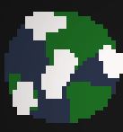

Full Stack MERN Developer

-
Z-axis Solutions Fullstack developer
Z-axis solutions. An event based social media that helped me learn to create a chat system, notifications work with tickets and lots of data. Web scrapping and creating middle ware and so much more. Over 30 hours a week of work.
Node JS Express MongoDB React.js React Native -
Cloudy Meadows

Cloudy Meadows is a project a friend and I have worked on for the majority of the summer. Using Local storage and HTML CSS and JavaScript including p5.js. I did a lot of code and most of the art as well. This is the first complete game I have made in awhile
JavaScript p5.js HTML CSS Local Storage -
Bridxe Frontend Internship

I have had the privilege of working with Bridxe as a front end intern. Using react and chart.js I have been fetching from a server to create data visualization components. This is a remote job with very flexible hours I have been able to learn while I work as well. So far this is my favorite job: making projects, having quick yet productive meetings and getting to do tutorials to learn more all on my time.
React Chart.js Python AWS -
My Website
This has been an ongoing project with several iterations and philosophy changes. I want a project that shows off good UI design and responsiveness. This forces a bit of pressure to be professional and flawless. When this project was started there was so little understanding of what would represent me and how to make things look good.
HTML CSS JavaScript Docker -
Hive Mind Nebula

Space has been taken over by a hive mind. Fight to be the team on top in the endless sci fi battle. This project is a 2D multiplayer game made in JavaScript with a team of four others. Node and Socket.io are used to create the server. p5js was used to create the game.
p5.js Node JavaScript -
Precision Infinity

I had the opportunity to shadow this company learning more about ORM database technology and C# web development. Precision makes admin boards for diverse companies. This means they work closely with database technologies and web development. They focus on UX as their customers can be anything from lunch ladies to farm owners. I got the opportunity to see some real world development and talk one on one.
C# ASP.net Entity Framework -
Universal Truth
Space is vast and full of resources and in this 2D Unity game the player has to buy everything they can. The game is made in C# with Unity and I used 2D lighting for the first time. I made it for the Florida Polytechnic game expo and got 8th/20. Not terrible as I was on my own and a sophomore, but the game has a lot of issues.
Unity C# -
Florida National News internship

Wordpress powers so much of the web, but at the time I had this internship, I was unaware of how useful it is. I found tips and tricks from Google and my friend Jason who had some real good experience in Wordpress and PHP guided me a ton. Florida National News is a nonprofit news publication. Most of what they do is on the website from SSL configuration to simple UI changes; all of it needs to be updated as soon as possible. I still use Wordpress for freelance work and got my start here.
Wordpress CSS HTML -
Florida Polytechnic University

I currently attend Florida Polytechnic University. I am earning a Bachelors in Computer Science. There are several ways I have made Poly a part of my life, I am the president of the Media Club, I work in the Simulation and MultiMedia Lab, and I write for Layers, a student newspaper.
C webGl Java C++ -
High School Programming Club
I had no real programming knowledge at the time but I had always wanted to know more about how computers worked. It didn't hurt that I also wanted to make games. At first my goal was programming as a hobby and to find some other career but I became obsessed and here we are today.
Java HTML CSS